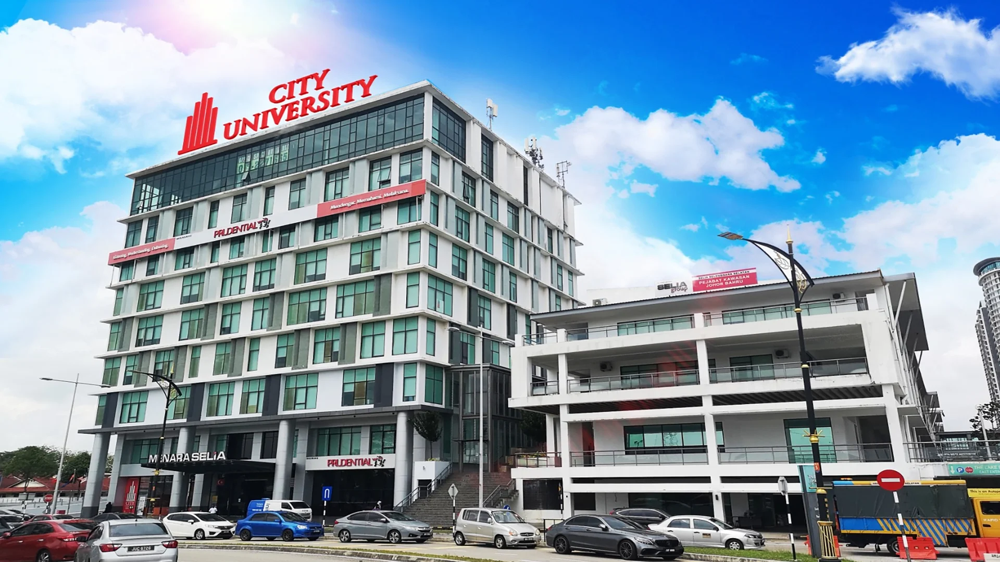
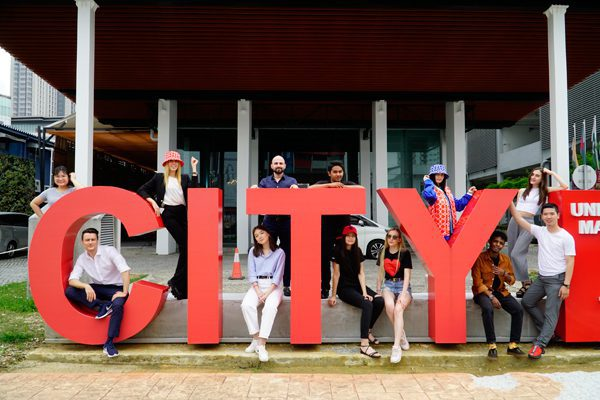

University overview
About City University Malaysia
City University Malaysia publishes campus information for Petaling Jaya, Cyberjaya and Johor Bahru, and identifies Kota Kinabalu as a regional centre. Select the programme and teaching location together; not every location label establishes availability for every course.
With over 35 years of experience in producing employability-ready graduates, City U provides a wide range of programs from Foundation to PhD levels.


International students
Study at City University Malaysia as an international student
Explore City University Malaysia by programme and teaching location. Petaling Jaya, Cyberjaya and Johor Bahru campus information and the Kota Kinabalu regional centre should not be treated as proof that every programme is offered at every location.
Programmes and tuition
City University Malaysia CityU courses and fees for international students
Schedule source and validity
Institution/campus in the stored schedule: City University Malaysia — Johor Bahru.
Section: JOHOR BAHRU CAMPUS.
Student category: International students.
Schedule edition: Stored schedule states 1 January–31 December 2026; applicability to your offer requires confirmation.
Fee basis: Published fees, scholarship tuition, resource charges and annual/total columns remain distinct; retain the original payment and tax notes.
| No | Programme | Duration | Semester | Published Fees | Tuition Fees Special Scholarship | Resource Fee | Year 1 | Year 2 | Year 3 | Year 4 | TOTAL |
|---|---|---|---|---|---|---|---|---|---|---|---|
| 1 | Diploma in Business | 3 Years | 8 | RM52,350 | RM32,224 | RM300 | RM23,054 | RM11,554 | RM11,236 | - | RM45,844 |
| 2 | Diploma in Early Childhood Education | 3 Years | 8 | RM52,350 | RM32,224 | RM300 | RM23,054 | RM11,554 | RM11,236 | - | RM45,844 |
| 3 | Bachelor of Business Administration (Honours) | 3 Years | 9 | RM78,000 | RM44,626 | RM500 | RM23,690 | RM17,278 | RM17,278 | - | RM58,246 |
| 4 | Bachelor of Education (Early Childhood Education) Honours | 3 Years | 9 | RM80,850 | RM44,626 | RM500 | RM23,690 | RM17,278 | RM17,278 | - | RM58,246 |
| 5 | Bachelor of Fashion Design Technology (Honours) BFDT-JB | 3 Years | 9 | RM48,800 | RM44,626 | RM500 | RM23,690 | RM17,278 | RM17,278 | - | RM58,246 |
| 6 | Bachelor of Information Technology (Honours) BIT-JB | 3 Years | 9 | RM89,252 | RM44,626 | RM500 | RM23,690 | RM17,278 | RM17,278 | - | RM58,246 |
| 7 | Master of Business Administration (MBA) | 3 Years | 3 | RM52,000 | RM22,403 | RM500 | RM36,023 | - | - | - | RM36,023 |
| 8 | Master of Education (MED) | 3 Years | 3 | RM55,000 | RM22,403 | RM500 | RM36,023 | - | - | - | RM36,023 |
| 9 | Doctor of Philosophy in Business Administration (PhDBA) | 3 Years | 9 | RM70,000 | RM41,128 | RM22,100 | RM16,324 | RM16,324 | - | - | RM54,748 |
| 10 | Doctor of Philosophy in Education (PhD Edu) | 3 Years | 9 | RM66,600 | RM41,128 | RM22,100 | RM16,324 | RM16,324 | - | - | RM54,748 |
Initial fees:
VISA (EMGS) FEE: RM3,000
APPLICATION PROCESSING FEE: RM1,060
INTERNATIONAL STUDENT FEE: RM8,000
COMPLETION PROCESSING FEE: RM1,060
TOTAL INITIAL FEES: RM13,120
Schedule remarks:
Payment Schedule:
1. Payment: Visa (EMGS) Fee RM 3000
2. Second Payment upon Receiving eVal: First Year Tuition Fee + Application Precessing Fee + International Student Fee + Completion processing fee.
*All fees are subject to 6% SST (Sales and Service Tax), effective from 1 September 2025.
Schedule source and validity
Institution/campus in the stored schedule: City University Malaysia — stored PJ/Cyberjaya grouping.
Section: PJ & CYBERJAYA CAMPUS - FOUNDATION & DIPLOMA.
Student category: International students.
Schedule edition: Stored schedule states 1 January–31 December 2026; applicability to your offer requires confirmation.
Fee basis: Published fees, scholarship tuition, resource charges and annual/total columns remain distinct; retain the original payment and tax notes.
| No | Programme | Duration | Semester | Published Fees | Tuition Fees Special Scholarship | Resource Fee | Year 1 | Year 2 | Year 3 | Year 4 | TOTAL |
|---|---|---|---|---|---|---|---|---|---|---|---|
| 1 | Foundation in Business | 1 Year | 3 | RM35,000 | RM12,969 | RM300 | - | - | - | - | RM26,089 |
| 2 | Foundation in Arts (Communication) | 1 Year | 3 | RM35,000 | RM12,969 | RM300 | - | - | - | - | RM26,089 |
| 3 | Foundation in Arts (English) | 1 Year | 3 | RM35,000 | RM12,969 | RM300 | - | - | - | - | RM26,089 |
| 4 | Foundation in Arts (Graphic Design & Multimedia) | 1 Year | 3 | RM35,000 | RM12,969 | RM300 | - | - | - | - | RM26,089 |
| 5 | Foundation in Arts (Build Environment) | 1 Year | 3 | RM35,000 | RM12,969 | RM300 | - | - | - | - | RM26,089 |
| 6 | Foundation in Arts (Fashion Design) | 1 Year | 3 | RM35,000 | RM12,969 | RM300 | - | - | - | - | RM26,089 |
| 7 | Foundation in Science | 1 Year | 3 | RM35,000 | RM12,969 | RM300 | - | - | - | - | RM26,089 |
| 8 | Foundation in Information Technology | 1 Year | 3 | RM35,000 | RM12,969 | RM300 | - | - | - | - | RM26,089 |
| 1 | Diploma in Fashion Design | 3 Years | 8 | RM52,350 | RM32,224 | RM300 | RM22,554 | RM11,554 | RM11,236 | - | RM45,344 |
| 2 | Diploma in Graphic Design | 3 Years | 8 | RM52,350 | RM32,224 | RM300 | RM22,554 | RM11,554 | RM11,236 | - | RM45,344 |
| 3 | Diploma in Mass Communication | 3 Years | 8 | RM52,350 | RM32,224 | RM300 | RM22,554 | RM11,554 | RM11,236 | - | RM45,344 |
| 4 | Diploma Corporate Communication | 3 Years | 8 | RM52,350 | RM32,224 | RM300 | RM22,554 | RM11,554 | RM11,236 | - | RM45,344 |
| 5 | Diploma in Accounting | 3 Years | 7 | RM52,350 | RM31,906 | RM300 | RM22,554 | RM11,554 | RM10,918 | - | RM45,026 |
| 6 | Diploma in Business Management | 3 Years | 8 | RM52,350 | RM32,224 | RM300 | RM22,554 | RM11,554 | RM11,236 | - | RM45,344 |
| 7 | Diploma in Human Resource Management | 3 Years | 8 | RM52,350 | RM32,224 | RM300 | RM22,554 | RM11,554 | RM11,236 | - | RM45,344 |
| 8 | Diploma in Office Management | 3 Years | 8 | RM52,350 | RM32,224 | RM300 | RM22,554 | RM11,554 | RM11,236 | - | RM45,344 |
| 9 | Diploma in Islamic Banking | 3 Years | 8 | RM52,350 | RM32,224 | RM300 | RM22,554 | RM11,554 | RM11,236 | - | RM45,344 |
| 10 | Diploma in Management | 3 Years | 7 | RM52,350 | RM31,906 | RM300 | RM22,554 | RM11,554 | RM10,918 | - | RM45,026 |
| 11 | Diploma in Information Technology | 3 Years | 7 | RM52,350 | RM31,906 | RM300 | RM22,554 | RM11,554 | RM10,918 | - | RM45,026 |
| 12 | Diploma in Medical Lab Technology | 3 Years | 9 | RM52,350 | RM32,542 | RM300 | RM22,554 | RM11,554 | RM11,554 | - | RM45,662 |
| 13 | Diploma in Nursing | 3 Years | 6 | RM52,350 | RM31,588 | RM300 | RM22,554 | RM11,554 | RM10,600 | - | RM44,708 |
| 14 | Diploma in Occupational Safety & Health | 3 Years | 9 | RM52,350 | RM32,542 | RM300 | RM22,554 | RM11,554 | RM11,554 | - | RM45,662 |
| 15 | Diploma in Environmental Health | 3 Years | 9 | RM52,350 | RM32,542 | RM300 | RM22,554 | RM11,554 | RM11,554 | - | RM45,662 |
| 16 | Diploma in Culinary Arts | 3 Years | 8 | RM52,350 | RM32,224 | RM300 | RM22,554 | RM11,554 | RM11,236 | - | RM45,344 |
| 17 | Diploma in Hotel Management | 3 Years | 8 | RM52,350 | RM32,224 | RM300 | RM22,554 | RM11,554 | RM11,236 | - | RM45,344 |
| 18 | Diploma in Early Childhood Education | 3 Years | 8 | RM52,350 | RM32,224 | RM300 | RM22,554 | RM11,554 | RM11,236 | - | RM45,344 |
| 19 | Diploma in Civil Engineering | 3 Years | 8 | RM52,350 | RM32,224 | RM300 | RM22,554 | RM11,554 | RM11,236 | - | RM45,344 |
| 20 | Diploma in Mechanical Engineering | 3 Years | 8 | RM52,350 | RM32,224 | RM300 | RM22,554 | RM11,554 | RM11,236 | - | RM45,344 |
| 21 | Diploma in Architectural Technology | 3 Years | 8 | RM52,350 | RM32,224 | RM300 | RM22,554 | RM11,554 | RM11,236 | - | RM45,344 |
| 22 | Diploma in Interior Design | 3 Years | 8 | RM52,350 | RM32,224 | RM300 | RM22,554 | RM11,554 | RM11,236 | - | RM45,344 |
Initial fees:
VISA (EMGS) FEE: RM3,000
APPLICATION PROCESSING FEE: RM1,060
INTERNATIONAL STUDENT FEE: RM8,000
COMPLETION PROCESSING FEE: RM1,060
TOTAL INITIAL FEES: RM13,120
Schedule remarks:
Payment Schedule:
1. Payment: Visa (EMGS) Fee RM 3000
2. Second Payment upon Receiving eVal: First Year Tuition Fee + Application Precessing Fee + International Student Fee + Completion processing fee.
*All fees are subject to 6% SST (Sales and Service Tax), effective from 1 September 2025.
Schedule source and validity
Institution/campus in the stored schedule: City University Malaysia — stored PJ/Cyberjaya grouping.
Section: PJ & CYBERJAYA CAMPUS - BACHELOR.
Student category: International students.
Schedule edition: Stored schedule states 1 January–31 December 2026; applicability to your offer requires confirmation.
Fee basis: Published fees, scholarship tuition, resource charges and annual/total columns remain distinct; retain the original payment and tax notes.
| No | Programme | Duration | Semester | Published Fees | Tuition Fees Special Scholarship | Resource Fee | Year 1 | Year 2 | Year 3 | Year 4 | TOTAL | ||
|---|---|---|---|---|---|---|---|---|---|---|---|---|---|
| 1 | Bachelor of Graphic Design (Hons) | 3 Years | 9 | RM80,850 | RM44,626 | RM500 | RM23,190 | RM17,278 | RM17,278 | - | RM57,746 | ||
| 2 | Bachelor of Fashion Design (Hons) | 3 Years | 9 | RM48,800 | RM44,626 | RM500 | RM23,190 | RM17,278 | RM17,278 | - | RM57,746 | ||
| 3 | Bachelor of Multimedia (Hons) | 3 Years | 9 | RM80,850 | RM44,626 | RM500 | RM23,190 | RM17,278 | RM17,278 | - | RM57,746 | ||
| 4 | Bachelor of Communication (Hons) Corporate Communication | 3 Years | 9 | RM80,850 | RM44,626 | RM500 | RM23,190 | RM17,278 | RM17,278 | - | RM57,746 | ||
| 5 | Bachelor of Communication (Hons) Mass Communication | 3 Years | 9 | RM80,850 | RM44,626 | RM500 | RM23,190 | RM17,278 | RM17,278 | - | RM57,746 | ||
| 6 | Bachelor of Communication (Hons) Journalism | 3 Years | 9 | RM80,850 | RM44,626 | RM500 | RM23,190 | RM17,278 | RM17,278 | - | RM57,746 | ||
| 7 | Bachelor of Animation*** | 3 Years | 9 | RM78,000 | RM55,650 | RM500 | RM26,370 | RM21,200 | RM21,200 | - | RM68,770 | ||
| 8 | Bachelor of Game Design*** | 3 Years | 9 | RM78,000 | RM55,650 | RM500 | RM26,370 | RM21,200 | RM21,200 | - | RM68,770 | ||
| 9 | Bachelor of Business Administration (Hons) | 3 Years | 9 | RM78,000 | RM44,626 | RM500 | RM23,190 | RM17,278 | RM17,278 | - | RM57,746 | ||
| 10 | Bachelor of Engineering Management (Hons) | 3 Years | 9 | RM78,000 | RM44,626 | RM500 | RM23,190 | RM17,278 | RM17,278 | - | RM57,746 | ||
| 11 | Bachelor of Accounting (Hons) | 3 Years | 6 | months | 10 | RM84,000 | RM56,180 | RM500 | RM23,190 | RM17,490 | RM17,490 | RM11,130 | RM69,300 |
| 12 | Bachelor of Science (Hons) Accounting & Finance | 3 Years | 9 | RM79,350 | RM44,626 | RM500 | RM23,190 | RM17,278 | RM17,278 | - | RM57,746 | ||
| 13 | Bachelor of Information Technology (Hons) | 3 Years | 9 | RM78,000 | RM44,626 | RM500 | RM23,190 | RM17,278 | RM17,278 | - | RM57,746 | ||
| 14 | Bachelor in Software Engineering | 3 Years | 9 | RM78,000 | RM44,626 | RM500 | RM23,190 | RM17,278 | RM17,278 | - | RM57,746 | ||
| 15 | Bachelor of Computer Science (Artificial Intelligence) (Hons)*** | 3 Years | 9 | RM78,000 | RM55,650 | RM500 | RM26,370 | RM21,200 | RM21,200 | - | RM68,770 | ||
| 16 | Bachelor of Computer Science (Cyber Security) (Hons)*** | 3 Years | 9 | RM78,000 | RM55,650 | RM500 | RM26,370 | RM21,200 | RM21,200 | - | RM68,770 | ||
| 14 | Bachelor of Occupational Safety & Health (Hons) | 4 Years | 11 | RM140,000 | RM56,710 | RM500 | RM23,190 | RM17,490 | RM17,490 | RM11,660 | RM69,830 | ||
| 15 | Bachelor of Biomedical Sciences (Hons) | 4 Years | 11 | RM140,000 | RM56,710 | RM500 | RM23,190 | RM17,490 | RM17,490 | RM11,660 | RM69,830 | ||
| 16 | Bachelor of Environmental Health (Hons) | 4 Years | 11 | RM98,000 | RM56,710 | RM500 | RM23,190 | RM17,490 | RM17,490 | RM11,660 | RM69,830 | ||
| 17 | Bachelor of Nursing | 4 Years | 8 | RM82,000 | RM55,120 | RM500 | RM23,190 | RM17,490 | RM16,960 | RM10,600 | RM68,240 | ||
| 18 | Bachelor of Hospitality Management (Hons) (Single Award) | 3 Years | 9 | RM80,850 | RM44,626 | RM500 | RM23,190 | RM17,278 | RM17,278 | - | RM57,746 | ||
| 19 | Bachelor of Education (Early Childhood Education) Honours | 3 Years | 9 | RM80,850 | RM44,626 | RM500 | RM23,190 | RM17,278 | RM17,278 | - | RM57,746 | ||
| 20 | Bachelor of Applied Psychology (Hons) | 3 Years | 9 | RM80,850 | RM44,626 | RM500 | RM23,190 | RM17,278 | RM17,278 | - | RM57,746 | ||
| 21 | Bachelor of Education (Hons) in Teaching English as a Second Language (TESL) | 3 Years | 9 | RM80,850 | RM44,626 | RM500 | RM23,190 | RM17,278 | RM17,278 | - | RM57,746 | ||
| 22 | Bachelor of Civil Engineering with Honours | 4 Years | 8 | RM94,850 | RM55,120 | RM500 | RM23,190 | RM17,490 | RM16,960 | RM10,600 | RM68,240 | ||
| 23 | Bachelor of Mechanical Engineering with Honours | 4 Years | 8 | RM94,850 | RM55,120 | RM500 | RM23,190 | RM17,490 | RM16,960 | RM10,600 | RM68,240 | ||
| 24 | Bachelor of Science (Hons) Architectural Design | 3 Years | 9 | RM85,850 | RM44,626 | RM500 | RM23,190 | RM17,278 | RM17,278 | - | RM57,746 | ||
| 25 | Bachelor of Interior Design (Hons) | 3 1/2 Years | 11 | RM85,850 | RM45,686 | RM500 | RM23,190 | RM17,278 | RM18,338 | - | RM58,806 |
Initial fees:
VISA (EMGS) FEE: RM3,000
APPLICATION PROCESSING FEE: RM1,060
INTERNATIONAL STUDENT FEE: RM8,000
COMPLETION PROCESSING FEE: RM1,060
TOTAL INITIAL FEES: RM13,120
Schedule remarks:
Payment Schedule:
1. Payment: Visa (EMGS) Fee RM 3000
2. Second Payment upon Receiving eVal: First Year Tuition Fee + Application Precessing Fee + International Student Fee + Completion processing fee.
*All fees are subject to 6% SST (Sales and Service Tax), effective from 1 September 2025.
Schedule source and validity
Institution/campus in the stored schedule: City University Malaysia — stored PJ/Cyberjaya postgraduate grouping.
Section: PETALING JAYA CAMPUS | CYBER JAYA CAMPUS - MASTER & PHD.
Student category: International students.
Schedule edition: Stored schedule states 1 January–31 December 2026; applicability to your offer requires confirmation.
Fee basis: Published fees, scholarship tuition, resource charges and annual/total columns remain distinct; retain the original payment and tax notes.
| No | Programme | Duration | Semester | Published Fees | Tuition Fees Special Scholarship | Resource Fee | Year 1 | Year 2 | Year 3 | Year 4 | TOTAL |
|---|---|---|---|---|---|---|---|---|---|---|---|
| 1 | Master of Business Administration (MBA) | 1 Year | 3 | RM52,000 | RM22,403 | RM500 | RM35,523 | - | - | - | RM35,523 |
| 2 | Master of Science in Business Administration (By Research) (MSCBA) | 2 Years | 6 | RM50,000 | RM23,993 | RM500 | RM23,190 | RM13,923 | - | - | RM37,113 |
| 3 | Master of Information Technology (MIT) | 1 Year | 3 | RM43,700 | RM22,403 | RM500 | RM35,523 | - | - | - | RM35,523 |
| 4 | Master of Accounting (MACC) | 1 Year | 3 | RM55,000 | RM22,403 | RM500 | RM35,523 | - | - | - | RM35,523 |
| 5 | Master of Education (MED) | 1 Year | 3 | RM55,000 | RM22,403 | RM500 | RM35,523 | - | - | - | RM35,523 |
| 6 | Master of Architecture (M.ARC) | 2 Years | 4 | RM67,300 | RM22,933 | RM500 | RM23,190 | RM12,863 | - | - | RM36,053 |
| 7 | Master of Mechanical Engineering (MME) | 1 Year | 3 | RM46,475 | RM22,403 | RM500 | RM35,523 | - | - | - | RM35,523 |
| 8 | Master of Sport Studies (MSS) By Research | 2 Years | 6 | RM79,000 | RM23,993 | RM500 | RM23,190 | RM13,923 | - | - | RM37,113 |
| 9 | Master of Creative Industries and Communication (MCIC) | 1 Year | 3 | RM86,750 | RM22,403 | RM500 | RM35,523 | - | - | - | RM35,523 |
| 10 | Master of Architecture Project Management (MAPM) | 1 Year | 3 | RM67,300 | RM22,403 | RM500 | RM35,523 | - | - | - | RM35,523 |
| 11 | Master in Artificial Intelligence*** | 1 Year | 3 | RM86,750 | RM22,790 | RM500 | RM35,910 | - | - | - | RM35,910 |
| 12 | Master in Cybersecurity*** | 1 Year | 3 | RM86,750 | RM22,790 | RM500 | RM35,910 | - | - | - | RM35,910 |
| 1 | Doctor of Business Administration (DBA) | 3 Years | 9 | RM70,000 | RM41,128 | RM21,600 | RM16,324 | RM16,324 | - | - | RM54,248 |
| 2 | Doctor of Education (DE) | 3 Years | 9 | RM69,000 | RM41,128 | RM21,600 | RM16,324 | RM16,324 | - | - | RM54,248 |
| 3 | Doctor of Philosophy in Business Administration (PhDBA) | 3 Years | 9 | RM69,000 | RM41,128 | RM21,600 | RM16,324 | RM16,324 | - | - | RM54,248 |
| 4 | Doctor of Philosophy in Design (PhD Design) | 3 Years | 9 | RM66,600 | RM41,128 | RM21,600 | RM16,324 | RM16,324 | - | - | RM54,248 |
| 5 | Doctor of Philosophy in Education (PhD Edu) | 3 Years | 9 | RM66,600 | RM41,128 | RM21,600 | RM16,324 | RM16,324 | - | - | RM54,248 |
| 6 | Doctor of Philosophy in Information Technology (PhD IT) | 3 Years | 9 | RM90,263 | RM41,128 | RM21,600 | RM16,324 | RM16,324 | - | - | RM54,248 |
| 7 | Doctor of Philosophy in Sport Studies (PhD SS) | 3 Years | 9 | RM97,000 | RM41,128 | RM21,600 | RM16,324 | RM16,324 | - | - | RM54,248 |
| 8 | Doctor of Philosophy in Performing Art (PhD PA) | 3 Years | 9 | RM101,750 | RM41,128 | RM21,600 | RM16,324 | RM16,324 | - | - | RM54,248 |
| 9 | Doctor of Philosophy in Built Environment (PhD BE) | 3 Years | 9 | RM101,750 | RM41,128 | RM21,600 | RM16,324 | RM16,324 | - | - | RM54,248 |
| 10 | Doctor of Philosophy in Engineering*** | 3 Years | 9 | RM97,000 | RM38,240 | RM26,900 | RM13,377 | RM13,377 | - | - | RM53,654 |
Initial fees:
VISA (EMGS) FEE: RM3,000
APPLICATION PROCESSING FEE: RM1,060
INTERNATIONAL STUDENT FEE: RM8,000
COMPLETION PROCESSING FEE: RM1,060
TOTAL INITIAL FEES: RM13,120
Schedule remarks:
Payment Schedule:
1. Payment: Visa (EMGS) Fee RM 3000
2. Second Payment upon Receiving eVal: First Year Tuition Fee + Application Precessing Fee + International Student Fee + Completion processing fee.
*All fees are subject to 6% SST (Sales and Service Tax), effective from 1 September 2025.
Download PETALING JAYA CAMPUS | CYBER JAYA CAMPUS - MASTER & PHD (PDF)
Download fee schedule (PDF)
Stored fee document for City University Malaysia. Check the printed validity and terms.
City University Malaysia rankings: QS World, Asia & Malaysia
Verified . Each figure below names its ranking edition.
- QS World 2027
- Not listed
- QS Asia 2026
- #=558
- Malaysia · QS World 2027
- Not listed
This entry is City University Malaysia in Petaling Jaya. City University of Hong Kong and City University of Macau are different institutions.
“Not listed” refers to the named QS table. “Not verified” means we could not confirm a position for that edition; it does not establish that the institution is unaccredited.
Malaysia positions are calculated among the 32 institutions listed by QS under Malaysia in its World 2027 table. This is not a separate government ranking. An = sign marks a tie. Institutions in the same world-rank band share a national position range because their exact order is not published.
QS World and QS Asia use different methods. Overall university positions do not establish the ranking of a particular BBA, IT, MBA or other program.
Explore the campus
Campus gallery
Questions and answers
Frequently Asked Questions About City University Malaysia CityU
Is City University Malaysia public or private?
The QS institutional profile identifies City University Malaysia as a private institution in Petaling Jaya, Malaysia. Confirm the teaching campus for your selected programme separately.
Is CityU's QS Asia position a QS World ranking?
No. QS Asia and QS World are separate ranking tables. Use the publisher, edition and table label shown in the ranking section; a QS Stars rating is also a different assessment.
View ranking sources
QS World University Rankings 2027 - official results spreadsheet (v1.1) · QS World University Rankings 2027 - release corrections · City University Malaysia - QS profile
What is the QS World ranking of City University Malaysia in 2027?
City University Malaysia has no institution entry in the published QS World University Rankings 2027 table.
Sources: QS World University Rankings 2027 - official results spreadsheet (v1.1) · QS World University Rankings 2027 - release corrections
What is the QS Asia ranking of City University Malaysia in 2026?
City University Malaysia is ranked #=558 in QS Asia University Rankings 2026.
What is the ranking of City University Malaysia in Malaysia?
City University Malaysia has no separate Malaysia position in the QS World 2027 table because it has no institution entry listed under Malaysia. This is a position within the QS World table, not a separate government ranking or a QS Asia position.
Sources: QS World University Rankings 2027 - official results spreadsheet (v1.1) · QS World University Rankings 2027 - release corrections
Do QS Stars, SETARA or partner rankings give City University Malaysia an overall QS rank?
QS Stars and SETARA are ratings, not numerical positions in a QS league table. A subject ranking applies to that subject, and a partner university rank belongs to the named partner. Check the institution, ranking system and edition before comparing.
Sources: QS Stars rating system
Are City University Malaysia fees the same at every campus?
The stored chart uses separate campus sections. Select the programme within its named campus section and check the notes; do not apply a Johor Bahru row to a Petaling Jaya or Cyberjaya offer.
Is the CityU scholarship fee available to every applicant?
The chart includes a Tuition Fees Special Scholarship column. That label does not establish your eligibility. Obtain written award conditions and the final payable amount for your programme, campus and intake.
What are City University Malaysia's tuition fees for Bangladeshi students?
Bangladeshi applicants should check the international-student rate for their program and intake. This page does not establish a separate Bangladesh-only tuition rate or guarantee eligibility for a discount. Check nationality-specific charges, deposits, visa costs and scholarship conditions in the schedule and your written offer.
Where can I find the official City University Malaysia fee chart?
The download links on this page open the stored fee documents. One-Step is a student guidance website. Confirm the document's edition, campus, student category and validity with the university before accepting an offer or paying. The university's current written fee schedule and offer determine the amount payable.
Which year do the City University Malaysia fees apply to?
The supplied schedule states: Valid from 1st January 2026 until 31st December 2026. Check individual course notes and confirm that the same rates apply to your intake.
Does City University Malaysia offer scholarships for international students?
Check any scholarship, adjusted tuition or discount columns alongside their conditions. A listed reduction is not an automatic award for every international or Bangladeshi applicant. Ask for the scholarship name, eligibility, application deadline, renewal conditions and final payable fee in writing.